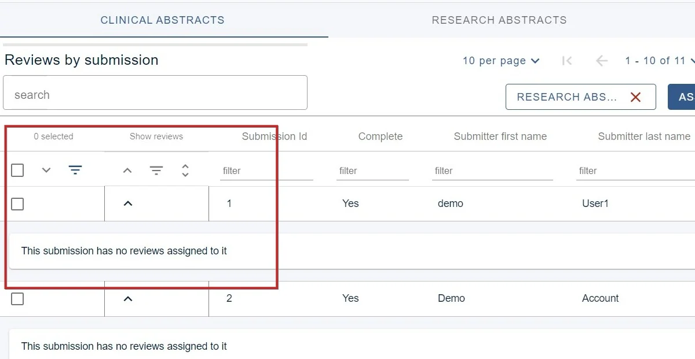

Accessing reviews from previous stages
If you have set up a multi stage sequential event, you may wish to access reviews from a previous stage.#
The guidance below is for event administrators/ organisers. If you are an end user (eg. submitter, reviewer, delegate etc), please click here.
Go to Event dashboard → Abstract Management → Reviews → By submission
You will see from the view below, the 1) Clinical Abstracts reviews are displayed in the table. You will also see a 2) Other stages dropdown menu to the left of the Assign reviewers button.
3) Click the down arrow to reveal the child rows (ie the reviews) for the reviews of a particular submission.
Choose the stage in the 2) Other stages menu to reveal the reviews (in this case, the reviews that took place in the Research abstracts stage
#
In the example below, there are none.
Click the red X in the Other stages dropdown to return to the reviews in the Clinical abstracts stage


Did this page solve it?
Thanks — this helps us fix it.
Didn't solve it? Ask our support team
No question is too small, and there's no charge for asking. Raise a ticket and someone who knows the software will pick it up.